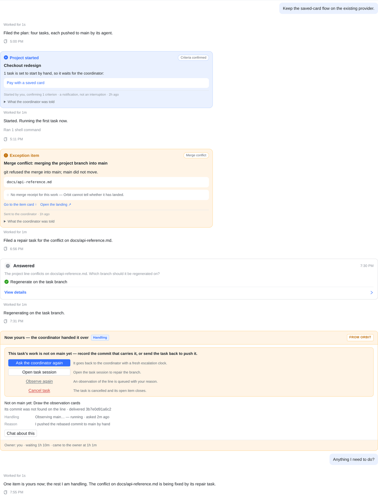
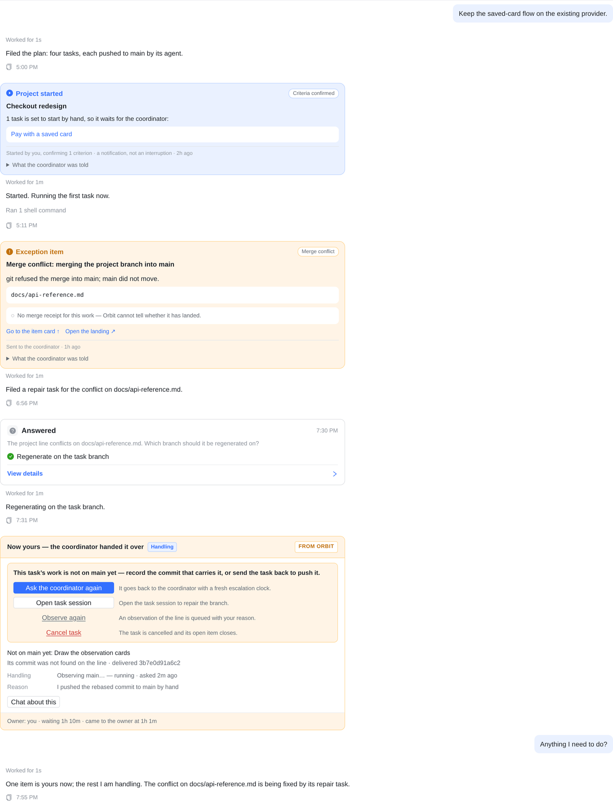

orbit-develop · web。下面两张图都是真实构建（src/web dist + 夹具数据）截的对话栏，窗口 1920 宽、对话栏 1279px。“建议”图是在同一构建上注入拟议 CSS 后截的。
测量（卡片外框宽度，px）：
| 对话栏宽 | Project started .psc | Exception item .oic | Answered .answered-question-card | 待办卡 .project-open-item-card |
|---|---|---|---|---|
| 1279（1920 窗口） | 720 | 720 | 1279 | 1279 |
| 799（1440 窗口） | 720 | 720 | 799 | 799 |
| 459（1100 窗口） | 459 | 459 | 459 | 459 |
| 362（手机 390） | 362 | 362 | 362 | 362 |
对话栏超过 720px 就开始不齐：通知类卡片停在 720，决策类卡片（共用 .approval-card 外框的）一直铺满。窄屏、手机上本来就一样宽。

红虚线 = 720px。前两张停在线上，后两张冲过去到栏的右边。

四张卡片右边对齐在同一条线上；回复正文、你的消息不变。
| 日期 | 改动 |
|---|---|
| 11-11 | orbit-cards-left 获批：Orbit 的卡片放到左侧、占满一栏 |
| 11-12 | session-message-bubble 获批：“cards capped too” —— 例外项、任务开工、项目已启动、确认审查卡片封顶 720px |
| 11-16 | 证据决定回执也封顶 720px（“和其他卡片一致”） |
| — | 共用 .approval-card 的卡片从没跟上：待办卡、问题卡与已回答记录、标准决定、证据决定、主人确认、合入卡、跨项目决定等仍然铺满 |
| 上限 | 卡片 | 建议 |
|---|---|---|
| 720px | 例外项 .oic、项目已启动 .psc、任务开工 .tsc、确认审查 .crc、其他会话消息 .smc、证据决定回执、Start project 卡 | 不变 |
| 无上限（铺满） | 待办卡、问题卡 / 已回答记录、标准决定、标准变更、证据决定、主人确认、合入卡、跨项目决定、项目结算卡（都用 .approval-card） | → 720px（D1） |
| 560 / 640 / 668px | 状态卡 .chat-status-card 560、会话回复卡 .src 560、落地窗口卡 640、定时卡 .sched-card 560 · 记录 640、机器设置卡 668 | → 720px（D2） |
一个变量 --chat-card-max: 720px，只在对话栏 (.workspace-sessions) 里生效，所有对话卡片的 max-width 都读它；项目页、弹窗、侧栏里的同名卡片不受影响。原来各写各的 720 也改成读这个变量，以后只有一处。
iOS / Android：本次只做 web；确认后需要的话再开任务对齐。